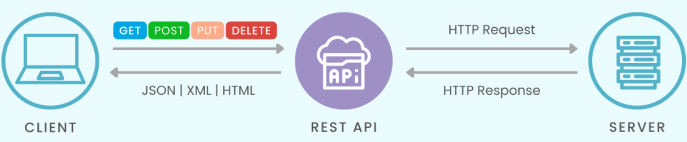
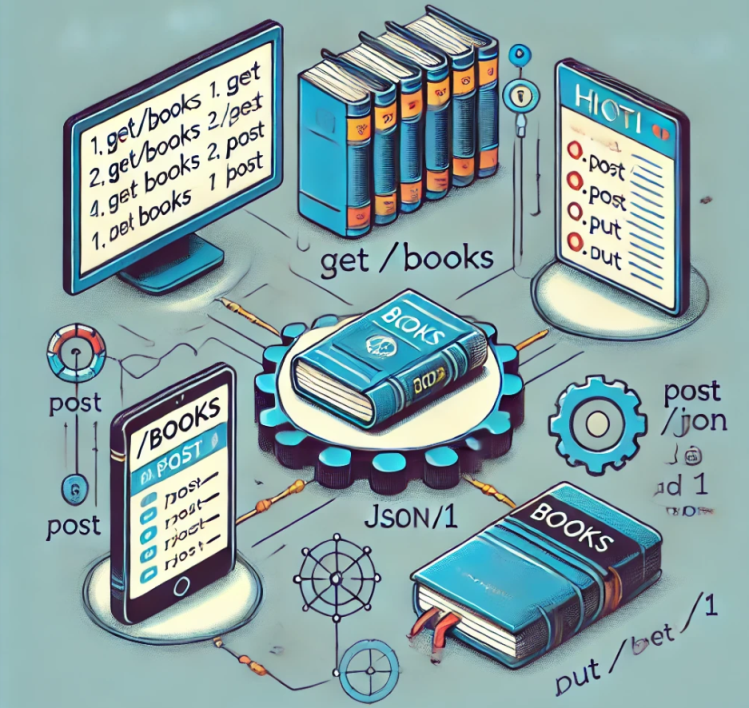

A REST API (Representational State Transfer Application Programming Interface) is an architectural style for designing web services that allows communication between clients and servers using protocols like HTTP. REST APIs are widely used due to their simplicity, scalability, and compatibility with web technologies.

Main Characteristics of REST APIs
- Resources: In a REST API, everything is considered a resource, identified by a unique URL.
- HTTP Methods: REST APIs utilize HTTP methods to perform operations on resources, including GET, POST, PUT and DELETE.
- Stateless: Each request from client to server must contain all the information needed to understand and process the request.
- Resource Representations: Resources can be represented in various formats, commonly JSON.
- HATEOAS: Responses from the server can include links to other available resources for easier navigation.
- Status Codes: REST APIs use HTTP status codes to indicate the outcome of requests.
Advantages of REST APIs
- Simplicity: Their structure is easy to understand and use.
- Scalability: REST APIs can handle a large number of simultaneous requests.
- Client-Server Independence: Clients and servers can be developed independently as long as they adhere to the API contract.
- Web Compatibility: Being based on standard web protocols makes them easily accessible by various clients.
Example of a REST API
Imagine a REST API for a bookstore:
- GET
/books
Retrieves a list of books. - GET
/books/1
Retrieves a specific book with ID 1. - GET
/books?author=George
Retrieves books by an author named "George". - POST
/books
Creates a new book by sending data in JSON format. - PUT
/books/1
Updates the book with ID 1 by sending updated data. - DELETE
/books/1
Deletes the book with ID 1.

Conclusion
REST APIs are a fundamental part of modern web development and are used in a wide variety of applications, from backend services to mobile apps.
Bibliography and Webography
«SKIPLEVEL». skiplevel.co